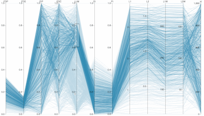
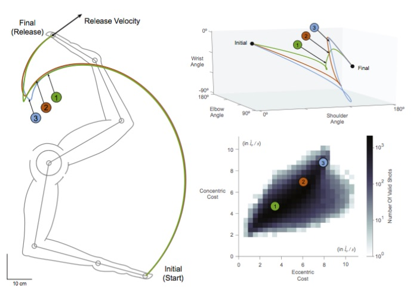

-

Reverse engineering fingertip motor control
Brian Cohn, Kian Jalaleddini Ph.D.
How do we learn to manipulate forces in spite of having squishy tendon-driven limbs? We are exploring how the mechanics of biology define the dimensionality of control. We achieve this with robotic and cadaveric studies, pulling on tendons, and identifying how muscle forces contribute to fingertip forces.
Related Publication:
Exploring the high-dimensional structure of muscle redundancy via subject-specific and generic musculoskeletal models
-

Uncovering muscle strategies across health and disease.
Chris Laine Ph.D., Akira Nagamori
Working with Parkinson's Disease patients to better understand how the descending cortical drive collaborates across muscles.
Related Publications:
The Dynamics of Voluntary Force Production in Afferented Muscle Influence Involuntary Tremor
-

Analysis of different movement trajectories
Dan Hagen
When it comes to free throws, what's the difference between a good shot, and a good looking shot? We are delving into the high dimensionality surrounding the many ways that an arm can shoot a basketball, and are uncovering the limitations of muscle control for different trajectories.
-

Squishy-Meta
Brian Cohn, Kian Jalaleddini
How is the control of squishy, non-linear robots different than the control of stiff, revolute robots? Do the algorithms for controlling each work when applied to the other?